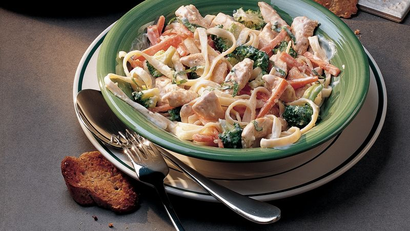

Easy Skillet Chicken Primavera

Description
This easy skillet chicken primavera recipe is a colorful and flavorful dish that's perfect for a quick weeknight meal. Tender chicken strips are coated in a delicious blend of flour, parsley, and basil, then sautéed in olive oil with garlic until lightly browned. The dish is then finished off with a mix of vibrant veggies, including grape tomatoes, green onions, zucchini, and frozen mixed vegetables, all cooked in low-sodium chicken stock and sun-dried tomato pesto. This dish is not only delicious but also healthy and easy to make, making it a go-to recipe for busy nights.
Ingredients
- ½ cup all-purpose flour
- 1 tablespoon dried parsley
- 1 teaspoon dried basil
- 1 ½ pounds skinless, boneless chicken breasts, cut into strips
- ¼ cup extra-virgin olive oil
- 1 tablespoon minced garlic
- 2 ¼ cups low-sodium chicken stock
- 1 cup frozen mixed vegetables
- 1 pint grape tomatoes, halved1 pint grape tomatoes, halved
- 1 bunch green onions, diagonally sliced
- 1 medium zucchini, quartered and sliced
- 2 tablespoons sun-dried tomato pesto
- salt and ground black pepper to taste
Steps
- Whisk together flour, parsley, and basil in a medium bowl. Add chicken strips and toss until well coated.
- Heat olive oil in a large skillet over medium heat. Add chicken and cook, turning occasionally, until lightly browned on the outside and no longer pink, about 10 minutes. Add garlic and cook for 1 minute.
- Add chicken stock, mixed vegetables, grape tomatoes, green onions, zucchini, and pesto. Cook, stirring occasionally, until heated through, about 10 minutes.